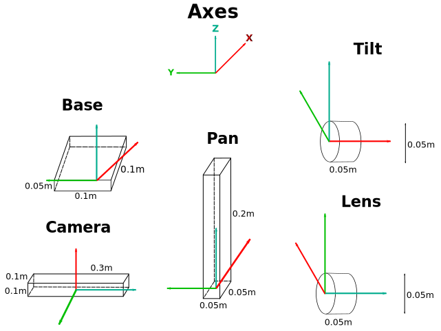

- Enter MyFirstApogyProject for the name of the new project;
- Ensure that the " Import Registered Apogy Project" check box is checked;
- Click " Next >";
- In the list of registered Apogy Project, select Rover Example;
- Click " Finish";

Apogy provides a series of built-in example Systems to illustrate and highlight its numerous capabilities and features. These Systems, while fairly basic simulations of their real-world counterparts, show at a high level to design a System and integrate it into Apogy. There are a large amount of variety in the examples, which include articulated and composite Systems. In addition, the examples leverage their respective Environment to facilitate the simulation. As suggested in the guidelines, each of the example Systems have their EMF meta-models separate and distinct from their Apogy (System) plug-ins. More than anything else, the examples highlight the recommended way to apogynize any new System.
The following examples are currently available in Apogy:
| Apogy System | Description | Plugin |
|---|---|---|
| PTUDishAntennaApogySystem | A simulated antenna dish mount on a pan-tilt unit (PTU). Antenna is made to track the Sun based on the ' Worksite sky. | ca.gc.asc_csa.apogy.examples.antenna |
| CameraApogySystem | A simulated camera. | ca.gc.asc_csa.apogy.examples.camera |
| PTUCameraApogySystem | A simulated camera mounted on a pan-tilt unit (PTU). | |
| LanderApogySystem | A simulated lander. | ca.gc.asc_csa.apogy.examples.lander |
| LidarApogySystem | A simulated raster scan Lidar. | ca.gc.asc_csa.apogy.examples.lidar |
| MobilePlatformApogySystem | A simulated four-wheeled, skid-steered mobile platform. | ca.gc.asc_csa.apogy.examples.mobile_platform |
| RoboticArmApogySystem | A simulated robotic arm with four rotatable joints | ca.gc.asc_csa.apogy.examples.robotic_arm |
| RoverApogySystem | A simulated rover, which is a complex System, composed of a Mobile Platform, Robotic Arm and two Camera sub-Systems. | ca.gc.asc_csa.apogy.examples.rover |
Note: It is important to note that while all of the above example Systems only provide simulations, given Apogy's flexibility, it would be a simple matter to add a real-world implementation for all of them.
This System refers to a conical antenna which is mounted on top of a pan-tilt unit (PTU). The antenna has the capability to change the position that it is directed at, by manipulating the PTU's pan and tilt angles. In fact, the antenna is capable to track and follow the position of the Sun in the sky.
This System refers to a basic camera. This camera is only capable to changing its zoom level and taking snapshots of the environment.
This System refers to a slightly more advanced Camera, which is mounted on top of a pan-tilt unit (PTU). In addition to the basic capabilities described for the Camera System, it is also capable of change the direction in which it is facing, by changing its PTU unit's pan and tilt angles appropriately.
This System refers to a three-legged lander, with a thruster mounted under the bottom center of it. The lander's three legs can be extended or retracted individually, allowing a variety of possible configurations. The amount of thrust exerted by the lander's thruster is controllable (within a range) and as such, the lander IS capable of flight; it however, rather tricky to control, especially when dealing with angular velocity.
This System refers to a raster scan Lidar unit. This System has a fixed position and is only capable of acquiring Lidar scans.
This System refers to a four-wheeled, movable platform, upon which other Systems could be attached. This System can control its linear and angular velocities, allowing it to move around the Environment.
This System refers to an articulated robotic arm with four different joints:
By changing the angles of its various joints, it can change its configuration as specified.
This System refers to a Composite or Complex System that contains four different sub-Systems:
The Rover combines all of these Systems to leverage all of their capabilities into one multi-purpose System.
In order to make it simpler to get started, Apogy provide a Registered Apogy Project for each of the examples. The primary component of each of these Apogy Projects is the session.sym file; this defines a sample Session that highlights the various features of that example. Each of these Sessions is designed to be fully usable as is; this allowing one to literally use it and see the example in action without having to add or change anything. In particular, they already have the following specified:
These Projects not only make it easy to use the examples, they are also valuable references when developing and using new Systems.
In order to import a Registered Apogy Project, one can simply:
The following tutorials provide hands-on training of Apogy. The goal of the training is to give the first-hand experience of Apogy as both a user and a developer; this will give a far deeper grasp of how best Apogy can be applied in various scenarios.
The examples are a simple way to get started interacting with Apogy and seeing what it can do. As laid out in the Registered Apogy Projects section above, it's easy to start using Apogy Systems; by doing so, one can gain a foundation for the material and better understanding for how Apogy and its various components operate.
Lets use the Rover example system to do that. Here is the step by step procedure to get started:
In order to view the Rover, a few views are necessary. Here are the steps to configure them:
You are now ready to initialize the rover and start issuing it commands. Here are the steps to do that:


Lets modify the angular velocity of the rover to make the arc turn wider. In order to do so, we will change the " angularVelocity" parameter of the " Change Angular Velocity" command. Here is how to do it:

If you want the rover to stop, just invoke " Stop". This command will set both linear and angular velocity to zero.
The following user-oriented exercises are geared towards providing a providing familiarity with Apogy Sessions. By the end of the session, one should be able to:
The following exercises are focused on the creating and fully setting up a Session and in particular, the Apogy Environment. By the end of this session, one should be able to:
| Parameter | Value |
|---|---|
| Url | platform:/plugin/ca.gc.asc_csa.apogy.examples.worksites.surface/data/CSAAnalogTerrainDEM100cm.tri |
| Parameter | Value |
|---|---|
| Url | platform:/plugin/ca.gc.asc_csa.apogy.examples.worksites.surface/data/CSA-AT-contour-map-black-20cm-per-line.png |
| Height (m) | 120.0 |
| Width (m) | 60.0 |
| Name | Position |
|---|---|
| Olympus Mons | 33.5, 9.5, 2.6 |
| Hill 937 | 33.0, 43.0, 0.3 |
The following exercises deal with issuing commands on a Apogy System. By the end of the session, one should be able to:
| Parameter | Value |
|---|---|
| linearVelocity | 1.5 (m/s) |
| angularVelocity | 5.0 (deg/s) |
| Parameter | Value |
|---|---|
| linearVelocity | 0.0 (m/s) |
| angularVelocity | 0.0 (deg/s) |
The following exercises investigate Operation Call Controller Bindings. By the end of this session, one should be able to:
| Parameter | Value |
|---|---|
| Dead Band | 0.1 |
| Maximum | -2.0 |
| Minimum | 2.0 |
| Parameter | Value |
|---|---|
| Dead Band | 0.1 |
| Maximum | -0.5 |
| Minimum | 0.5 |
| Parameter | Value |
|---|---|
| Dead Band | 0.1 |
| Maximum | -2.0 |
| Minimum | 2.0 |
| Parameter | Value |
|---|---|
| Dead Band | 0.1 |
| Maximum | -0.5 |
| Minimum | 0.5 |
The following exercises illustrated how to specify and use composite Systems. By the end of this session, one should be able to:
The desired target assembly for this exercise is:

This should yield a composite System that looks like this:
The goal of the following exercises is to understand how the Camera View operates and learn how to use to it. By the end of this session, one should be able to:
The following exercises demonstrate how the Map View operates and how it is used. By the end of this section, one should be able to:
The following exercises go step-by-step through the process of creating a System for a camera mounted on a pan-tilt unit (PTU). Through the process of creating the final PTUCamera System, one should learn how to:
The class structure for the PTUCamera's System should be as follows:
The following exercises go through the process of creating the required EMF meta-model for the new PTUCamera System. By the end of this section, one should be able to:
@GenModel(prefix="PTUCamera", modelName="PTUCamera", childCreationExtenders="true", extensibleProviderFactory="true", multipleEditorPages="false", operationReflection="true", suppressGenModelAnnotations="false") @GenModel(modelDirectory="/<org_prefix>.ptu/src-generated") @GenModel(editDirectory="/<org_prefix>.ptu.edit/src-generated")
package <org_prefix>.ptu
// The extent of the zoom capabilities for the camera protected static final double MIN_ZOOM = 1.0; protected static final double MAX_ZOOM = 10.0;
// The appropriate extents of the camera's FOV protected static final double MAX_HORIZ_FOV_DEGREES = 45.0; protected static final double MAX_VERT_FOV_DEGREES = 33.75;
// The FOV's default range extents protected static final double FOV_DEF_MIN_RANGE = 0.0; protected static final double FOV_DEF_MAX_RANGE = 10.0;
/**
* This helper method is used to calculate the horizontal angle (in
* radians) of the field of view. This calculation is based on both
* the current zoom level (which is between getMinimumZoom() and
* getMaximumZoom(), inclusively) as well as a constant specifying the
* FOV's maximum horizontal angle.
*
* @return The horizontal field of view angle (in radians)
* @see #calculateVerticalFOVangle()
* @see #updateFov()
*/
protected double calculateHorizontalFOVAngle()
{
// Calculate and return the horizontal FOV angle
double angle = MAXIMUM_HORIZONTAL_FOV_DEGREES / getCurrentZoom();
return Math.toRadians(angle);
}
/**
* This helper method is used to calculated the vertical angle (in
* radians) of the field of view. This calculation is based on both
* the current zoom level (which is between getMinimumZoom() and
* getMaximumZoom(), inclusively) as well as a constant specifying the
* maximum vertical angle.
*
* @return The vertical field of view angle (in radians)
* @see #calculateHorizontalFOVAngle()
* @see #updateFov()
*/
protected double calculateVerticalFOVAngle()
{
// Calculate and return the vertical FOV angle
double angle = MAXIMUM_VERTICAL_FOV_DEGREES / getCurrentZoom();
return Math.toRadians(angle);
}
/**
* This helper method is used to update the both the horizontal and
* vertical angles (in radians) of the rectangular frustrum field of view,
* based on the current level of zoom.
*
* @see #calculateHorizontalFOVAngle()
* @see #calculateVerticalFOVAngle()
*/
protected void updateFov()
{
// Calculate the new field of view (FOV) angles and
// update the FOV accordingly.
getFov().setHorizontalFieldOfViewAngle(calculateHorizontalFOVAngle());
getFov().setVerticalFieldOfViewAngle(calculateVerticalFOVAngle());
}
/**
* This method is used to the FOV attribute associated with this camera.
*
* @return The RectangularFrustrumFieldOfView that corresponds to the camera's FOV attribute
* @generated_NOT
*/
@Override
public RectangularFrustrumFieldOfView getFov()
{
// If there currently is no FOV
if(fov == null)
{
// Create one with certain default parameters
fov = FOVFacade.INSTANCE.createRectangularFrustrumFieldOfView(FOV_DEF_MINIMUM_RANGE,
FOV_DEF_MAXIMUM_RANGE,
calculateHorizontalFOVAngle(),
calculateVerticalFOVAngle());
// Set it as the camera's FOV setFov(fov); }
// Return the camera's field of view return fov; }
/**
* This method is used to get the field of view (FOV) associated with
* the camera.
*
* @return The RectangularFrustrumFieldOfView that defines the camera's FOV
* @generated_NOT
*/
@Override
public RectangularFrustrumFieldOfView getFieldOfView()
{
// Just return the field of view attribute
return getFov();
}
/**
* This method is used to get the minimum zoom value for the camera.
*
* @return The smallest allowed zoom value for this camera
* @generated_NOT
*/
@Override
public double getMinimumZoom()
{
// Just return the predefined minimum zoom value
return MIN_ZOOM;
}
/**
* This method is used to get the maximum zoom value for the camera.
*
* @return The largest allowed zoom value for this camera
* @generated_NOT
*/
@Override
public double getMaximumZoom()
{
// Just return the predefined maximum zoom value
return MAX_ZOOM;
}
/**
* This method is used to change the current zoom of the camera;
* note as this affects the camera's field of view, it also needs
* to be appropriately update.
*
* @param zoom The camera's commanded zoom factor
* @return Whether or not the camera's zoom was updated
* generated_NOT
*/
@Override
public boolean commandZoom(double zoom)
{
// Update the camera's commanded zoom factor; that is,
// the value that it was commanded to change to
setCommandedZoom(zoom);
// If the commanded zoom value is in the required range
if ((zoom >= getMinimumZoom()) &&
(zoom <= getMaximumZoom())
{
// Set the camera's current zoom to that value
setCurrentZoom(zoom);
// Update the camera's FOV, given the new current zoom factor updateFov();
// Indicate that the zoom was updated
return true;
}
// Otherwise, it's not in range
else
{
// Just indicate that the zoom wasn't updated
return false;
}
}
/**
* This method is used to perform any required
* initialization operations before the camera
* can be used.
*
* @return Whether or not the camera was successfully initialized.
* @generated_NOT
*/
@Override
public boolean initialize()
{
// Just return true
return true;
}
/**
* This method is used to command the camera to
* take an ImageSnapshot and then return it.
*
* @return The image snapshot captured by the camera
* @generated_NOT
*/
@Override
public ImageSnapshot takeSnapshot()
{
// Create an image snapshot
ImageSnapshot imageSnapshot = ApogyAddonsSensorsImagingPackage.eINSTANCE.createImageSnapshot();
// Set the time of the snapshot imageSnapshot.setTime(new Date());
// Save a copy of the current field of view imageSnapshot.setFieldOfView(ApogyAddonsSensorsFOVFacade.INSTANCE.createRectangularFrustrumFieldOfView(getFieldOfView()));
// Save the image in the snapshot imageSnapshot.setImage(null);
// Update the latest snapshot accordingly setLatestImageSnapshot(imageSnapshot);
// Return the generated snapshot return imageSnapshot; }
// The minimum and maximum pan angles (in radians) // that the camera's PTU can move to protected static final double MIN_PAN_ANGLE_RAD = Math.toRadians(-170.0); protected static final double MAX_PAN_ANGLE_RAD = Math.toRadians(170.0);
// The minimum and maximum tilt angles (in radians) // that the camera's PTU can move to protected static final double MIN_TILT_ANGLE_RAD = Math.toRadians(-45.0); protected static final double MAX_TILT_ANGLE_RAD = Math.toRadians(90.0);
/**
* This method returns the minimum angle (in radians)
* that the PTU camera can pan to.
*
* @return The PTU camera's minimum pan angle (in radians)
* generated_NOT
*/
@Override
public double getMinimumPanAngle()
{
// Just return the predefined min pan angle
return MIN_PAN_ANGLE_RAD;
}
/**
* This method returns the maximum angle (in radians)
* that the PTU camera can pan to.
*
* @return The PTU camera's maximum pan angle (in radians)
* @generated_NOT
*/
@Override
public double getMaximumPanAngle()
{
// Just return the predefined max pan angle
return MAX_PAN_ANGLE_RAD;
}
/**
* This method returns the minimum angle (in radians)
* that the PTU camera can tilt to.
*
* @return The PTU camera's minimum tilt angle (in radians)
* @generated_NOT
*/
@Override
public double getMinimumTiltAngle()
{
// Just return the predefined min tilt angle
return MIN_TILT_ANGLE_RAD;
}
/**
* This method returns the maximum angle (in radians)
* that the PTU camera can tilt to.
*
* @return The PTU camera's maximum tilt angle (in radians)
* @generated_NOT
*/
@Override
public double getMaximumTiltAngle()
{
// Just return the predefined max tilt angle
return MAX_TILT_ANGLE_RAD;
}
/** * This general purpose helper function is used to * implement the various pan and tilt functionality. * * It will check to see if the commanded pan and tilt * angles (in radians) are in range. If this is so, it * will update the current pan and tilt values * appropriately and return true; otherwise, it will * return false
* @param pan The commanded (i.e. desired) pan angle (in radians)
* @param tilt The commanded (i.e. desired) tilt angle (in radians)
* @return Whether or not the pan and tilt could be updated
*/
protected boolean moveTo(double panAngle, double tiltAngle)
{
// Indicate that these are the commanded pan and tilt angles
setCommandedPanAngle(panAngle);
setCommandedTiltAngle(tiltAngle);
// If the pan angle is in range
if ((panAngle >= getMinimumPanAngle()) &&
(panAngle <= getMaximumPanAngle()))
{
// If the tilt angle is in range
if ((tiltAngle >= getMinimumTiltAngle()) &&
(tiltAngle <= getMaximumTiltAngle()))
{
// Both angles are in range, update the current
// pan and tilt angles appropriately
setCurrentPanAngle(panAngle);
setCurrentTiltAngle(tiltAngle);
// Indicate that the angles were updated return true; } }
// At least one of the provided angles aren't in range; // indicate that the angles could be updated return false; }
/**
* This method checks the commanded pan angle, which is in
* radians. If it is within range, it will update the current
* pan angle accordingly and then return true; otherwise, it
* will return false.
*
* @param panAngle The commanded (i.e. desired) pan angle (in radians)
* @return Whether or not the pan angle can be changed to that value
* @generated_NOT
*/
@Override
boolean moveToPan(double panAngle)
{
// Just call moveTo() appropriately and return its result
return moveTo(panAngle, getCurrentTiltAngle());
}
/**
* This method checks the commanded tilt angle, which is in
* radians. If it is within range, it will update the current
* tilt angle accordingly and then return true; otherwise, it
* will return false.
*
* @param tiltAngle The commanded (i.e. desired) tilt angle (in radians)
* @return Whether or not the tilt angle can be changed to that value
* @generated_NOT
*/
@Override
boolean moveToTilt(double tiltAngle)
{
// Just call moveTo() appropriately and return its result
return moveTo(getCurrentPanAngle(), tiltAngle);
}
/**
* This method checks the commanded pan and tilt angles,
* both of which are in radians. If they are within their
* respective ranges, it will will update the current pan
* and tilt angles accordingly and then return true;
* otherwise, it will return false.
*
* @param panAngle The commanded (i.e. desired) pan angle (in radians)
* @param tiltAngle The commanded (i.e. desired) tilt angle (in radians)
* @return Whether or not the pan and tilt angles can be changed to those values
* @generated_NOT
*/
@Override
boolean moveToPanTilt(double panAngle, double tiltAngle)
{
// Just call moveTo() appropriately and return its result
return moveTo(panAngle, tiltAngle);
}
/**
* This method checks the commanded pan angle, which
* is the sum of the current pan angle plus the given pan
* offset. If the resulting pan angle is within range, it will
* update the current pan angle accordingly and then return
* true; otherwise, it will return false.
*
* @param panAngleOffset The amount (in radians) to change the current pan angle by
* @return Whether or not the current pan angle can be changed by that offset
* @generated_NOT
*/
@Override
public boolean moveByPan(double panAngleOffset)
{
// Calculate the effective commanded pan angle
double panAngle = getCurrentPanAngle() + panAngleOffset;
// Call moveTo() appropriately and return its result return moveTo(panAngle, getCurrentTiltAngle()); }
/**
* This method checks the commanded tilt angle, which
* is the sum of the current tilt angle plus the given tilt
* offset. If the resulting tilt angle is within range, it will
* update the current tilt angle accordingly and then return
* true; otherwise, it will return false.
*
* @param tiltAngleOffset The amount (in radians) to change the current tilt angle by
* @return Whether or not the current tilt angle can be changed by that offset
* @generated_NOT
*/
@Override
public boolean moveByTilt(double tiltAngleOffset)
{
// Calculate the effective commanded tilt angle
double tiltAngle = getCurrentTiltAngle() + tiltAngleOffset;
// Call moveTo() appropriately and return its result return moveTo(getCurrentPanAngle(), tiltAngle); }
/**
* This method checks the commanded pan and tilt angles, which
* are the sum of the current pan angle plus the given pan offset
* and the sum of the current tilt angle plus the given tilt offset,
* respectively. If the resulting angles are within their respective
* ranges, it will update the angles accordingly and then return true;
* otherwise, it will return false.
*
* @param panAngleOffset The amount (in radians) to change the current pan angle by
* @param tiltAngleOffset The amount (in radians) to change the current tilt angle by
* @return Whether or not the current pan and tilt angles can be changed by those offsets
* @generated_NOT
*/
@Override
public boolean moveByPanTilt(double panAngleOffset, double tiltAngleOffset)
{
// Calculate the effective commanded pan and tilt angles
double panAngle = getCurrentPanAngle() + panAngleOffset;
double tiltAngle = getCurrentTiltAngle() + tiltAngleOffset;
// Call moveTo() appropriately and return its result return moveTo(panAngle, tiltAngle); }
/**
* This is used to stop the PTU camera, if it is in the
* process of moving to a given set of pan and tilt angles.
*
* @return Whether or not the PTU camera's motion was stopped
* @generated_NOT
*/
@Override
public boolean stopMotion()
{
// Just return true
return true;
}
The following exercises focus on creating the Apogy plugin for the new PTUCamera System. By the end of this section, one should be able to:
@GenModel(prefix="PTUCameraApogy", modelName="PTUCameraApogy", childCreationExtenders="true", extensibleProviderFactory="true", multipleEditorPages="false", operationReflection="true", suppressGenModelAnnotations="false") @GenModel(modelDirectory="/<org_prefix>.ptu.apogy/src-generated") @GenModel(editDirectory="/<org_prefix>.ptu.apogy.edit/src-generated")
package <org_prefix>.ptu.apogy
/**
* Create a new instance of PTUCameraApogyInitializationData,
* which is the relevant subclass of ApogyInitializationData
* for the PTUCamera System.
*
* @return The newly created PTUCameraApogyInitializationData object
* @generated_NOT
*/
@Override
public AbstractInitializationData createInitializationData()
{
// Create and return a PTUCameraApogyInitializationData
return PTUCameraFactory.createPTUCameraApogyInitializationData();
}
/**
* Sets the attributes of the given ApogyInitializationData object
* to the corresponding values of the PTUCamera System' instance's
* state. In this case, it simply gets the values of pan, tilt
* and zoom from the System instance and stores them in the provided
* ApogyInitializationData object, given that it has the correct type.
*
* @param initData The initialization data object that is supposed to collect the state of the System
* @generated_NOT
*/
@Override
public void collect(AbstractInitializationData initData)
{
// Call the superclass' version of the method
super.collect(initData);
// If the initialization data object has the correct type
if (initData instanceof PTUCameraApogyInitializationData)
{
// Cast down
PTUCameraApogyInitializationData ptuCameraInitData = (PTUCameraApogyInitializationData) initData;
PTUCamera ptuCamera = (PTUCamera) this.getInstance();
// Store the System instance's state in the initialization data object ptuCameraInitData.setPanAngle(ptuCamera.getPanAngle()); ptuCameraInitData.setTiltAngle(ptuCamera.getTiltAngle()); ptuCameraInitData.setZoomFactor(ptuCamera.getCurrentZoom()); } }
/**
* Applies the values in the provided ApogyInitializationData to this
* PTUCamera System instance. In this case, it will call the appropriate
* methods to set the instance's state correctly.
*
* @param initData The initialization data object that is supposed to apply its state to the given System instance.
* @generated_NOT
*/
@Override
public void apply(AbstractInitializationData initData)
{
// Call the superclass' version of this method
super.apply(initData);
// If the initialization data object has the correct type
if (initData instanceof PTUCameraApogyInitializationData)
{
// Cast down
PTUCameraApogyInitializationData ptuCameraInitData = (PTUCameraApogyInitializationData) initData;
PTUCamera ptuCamera = (PTUCamera) this.getInstance();
// Apply the values ptuCamera.commandZoom(ptuCameraInitData.getZoomFactor()); ptuCamera.moveToPanTilt(ptuCameraInitData.getPanAngle(), ptuCameraInitData.getTiltAngle()); } }
/**
* Return a 4x4 matrix, whose components represent the transformation
* (e.g. rotations, translations, etc.) from where the given operation
* took place to the camera's root topology node; for example, for the
* operation takeSnapshot(), this describes the transformation from
* the camera's lens to its base (e.g. root). If no transformation
* occurred, then the identity matrix should be returned; note that this,
* in fact, is what is returned by the superclass' version of this method.
*
* @param operationCall The operation which took place
* @return The transformation from where the operation took place to the PTU camera's root
* @generated_NOT
*/
@Override
public Matrix4x4 createResultMatrix(OperationCall operationCall)
{
// If the takeSnapshot() method was called
if (operationCall.getEOperation().getOperationID() == PTUCameraPackage.CAMERA___TAKE_SNAPSHOT)
{
// Extract the camera lens and root nodes
Node tip = TopologyFacade.INSTANCE.findNodesByID("PTU_CAMERA_FOV",
getApogySystem().getTopologyRoot().getOriginNode()).get(0);
Node root = TopologyFacade.INSTANCE.findNodesByID("PTU_CAMERA_ROOT",
getApogySystem().getTopologyRoot().getOriginNode()).get(0);
// Determine the series of transformations that have taken place Matrix4d matrix4d = TopologyFacade.INSTANCE.expressInFrame(tip, root);
// Create a 4x4 Matrix with the transformation and return it
return MathFacade.INSTANCE.createMatrix4x4(matrix4d);
}
// Otherwise, any other operation was called
else
{
// Just return the identity matrix
return super.createResultMatrix(operationCall);
}
}
The following exercises highlight how to create the PTUCamera System's complete Apogy System model. By the end of this section, one should be able to:
The following exercises show how to specify the topology for the PTUCamera's Apogy System model. By the end of this section, one should be able to:
The desired final topology for MyPTUCameraApogySystem should have be as following:
It's important that you set a node's ID / description as soon as it's created; this will make it much easier to both understand and navigate the topology.
The desired final transformation for the components of MyPTUCameraApogySystem should be as follows:

Recall that the RectangularFrustrumFieldOfView component of the MyPTUCamera System has following properties:
Once all of the topology in MyPTUCameraApogySystem.ss has been fully populated, the result should look like:
In Apogy, and 3D computer graphics in general, a common way to specify the geometry of a component is actually by providing two separate files. The first, the Material file (*.mtl), specifies the various materials (i.e. surfaces) used by a component and their graphical properties (e.g. ambient/diffuse/specular colour, transparency, etc.) The second, the Object file (*.obj), which can refer to multiple Material files, specifies actual component geometry, including the various object vertices, vertex normals, UV mapping, etc.
As the PTUCamera System is comprised of five different components, there needs to be a .obj and .mtl file for each of these elements in order for them to be displayed properly.
In the /cadmodels folder, add the following ten (10) files with the specified content:
newmtl Shape Ns 900.000000 Ka 0.000000 0.000000 0.000000 Kd 0.693600 0.746400 0.800000 Ks 0.500000 0.500000 0.500000 Ni 1.000000 d 1.000000 illum 2
mtllib base.mtl o ShapeBox v -0.050000 -0.050000 -0.000000 v -0.050000 0.050000 0.000000 v 0.050000 0.050000 0.000000 v 0.050000 -0.050000 -0.000000 v -0.050000 -0.050000 0.050000 v -0.050000 0.050000 0.050000 v 0.050000 0.050000 0.050000 v 0.050000 -0.050000 0.050000 vn -1.000000 -0.000000 0.000000 vn 0.000000 1.000000 0.000000 vn 1.000000 0.000000 -0.000000 vn -0.000000 -1.000000 -0.000000 vn -0.000000 0.000000 -1.000000 vn 0.000000 -0.000000 1.000000 g ShapeBox_ShapeBox_Shape usemtl Shape s off f 5//1 6//1 2//1 1//1 f 6//2 7//2 3//2 2//2 f 7//3 8//3 4//3 3//3 f 8//4 5//4 1//4 4//4 f 1//5 2//5 3//5 4//5 f 8//6 7//6 6//6 5//6
newmtl Shape Ns 900.000000 Ka 0.000000 0.000000 0.000000 Kd 0.800000 0.000000 0.000000 Ks 0.500000 0.000000 0.000000 Ni 1.000000 d 1.000000 illum 2
mtllib pan.mtl o ShapeBox v -0.025000 -0.025000 0.000000 v -0.025000 0.025000 0.000000 v 0.025000 0.025000 0.000000 v 0.025000 -0.025000 -0.000000 v -0.025000 -0.025000 0.200000 v -0.025000 0.025000 0.200000 v 0.025000 0.025000 0.200000 v 0.025000 -0.025000 0.200000 vn -1.000000 -0.000000 0.000000 vn 0.000000 1.000000 0.000000 vn 1.000000 0.000000 -0.000000 vn -0.000000 -1.000000 -0.000000 vn -0.000000 0.000000 -1.000000 vn 0.000000 -0.000000 1.000000 g ShapeBox_ShapeBox_Shape usemtl Shape s off f 5//1 6//1 2//1 1//1 f 6//2 7//2 3//2 2//2 f 7//3 8//3 4//3 3//3 f 8//4 5//4 1//4 4//4 f 1//5 2//5 3//5 4//5 f 8//6 7//6 6//6 5//6
newmtl Shape Ns 900.000000 Ka 0.000000 0.000000 0.000000 Kd 0.000000 0.800000 0.000000 Ks 0.000000 0.500000 0.000000 Ni 1.000000 d 1.000000 illum 2
mtllib tilt.mtl o ShapeCylinder v -0.000000 -0.000000 0.025000 v 0.050000 0.000000 0.025000 v -0.000000 0.009567 0.023097 v 0.050000 0.009567 0.023097 v -0.000000 0.017678 0.017678 v 0.050000 0.017678 0.017678 v -0.000000 0.023097 0.009567 v 0.050000 0.023097 0.009567 v -0.000000 0.025000 -0.000000 v 0.050000 0.025000 0.000000 v -0.000000 0.023097 -0.009567 v 0.050000 0.023097 -0.009567 v 0.000000 0.017678 -0.017678 v 0.050000 0.017678 -0.017678 v 0.000000 0.009567 -0.023097 v 0.050000 0.009567 -0.023097 v 0.000000 -0.000000 -0.025000 v 0.050000 0.000000 -0.025000 v 0.000000 -0.009567 -0.023097 v 0.050000 -0.009567 -0.023097 v 0.000000 -0.017678 -0.017678 v 0.050000 -0.017678 -0.017678 v 0.000000 -0.023097 -0.009567 v 0.050000 -0.023097 -0.009567 v 0.000000 -0.025000 -0.000000 v 0.050000 -0.025000 0.000000 v 0.000000 -0.023097 0.009567 v 0.050000 -0.023097 0.009567 v -0.000000 -0.017678 0.017678 v 0.050000 -0.017678 0.017678 v -0.000000 -0.009567 0.023097 v 0.050000 -0.009567 0.023097 vn -0.000000 0.195090 0.980785 vn -0.000000 0.555570 0.831470 vn -0.000000 0.831470 0.555570 vn -0.000000 0.980785 0.195090 vn -0.000000 0.980785 -0.195090 vn -0.000000 0.831470 -0.555570 vn 0.000000 0.555570 -0.831470 vn 0.000000 0.195090 -0.980785 vn 0.000000 -0.195090 -0.980785 vn 0.000000 -0.555570 -0.831470 vn 0.000000 -0.831469 -0.555571 vn 0.000000 -0.980785 -0.195090 vn 0.000000 -0.980785 0.195090 vn 0.000000 -0.831469 0.555570 vn 1.000000 0.000000 0.000000 vn -0.000000 -0.195090 0.980785 vn -0.000000 -0.555570 0.831470 vn -1.000000 -0.000000 -0.000000 g ShapeCylinder_ShapeCylinder_Shape usemtl Shape s off f 1//1 2//1 4//1 3//1 f 3//2 4//2 6//2 5//2 f 5//3 6//3 8//3 7//3 f 7//4 8//4 10//4 9//4 f 9//5 10//5 12//5 11//5 f 11//6 12//6 14//6 13//6 f 13//7 14//7 16//7 15//7 f 15//8 16//8 18//8 17//8 f 17//9 18//9 20//9 19//9 f 19//10 20//10 22//10 21//10 f 21//11 22//11 24//11 23//11 f 23//12 24//12 26//12 25//12 f 25//13 26//13 28//13 27//13 f 27//14 28//14 30//14 29//14 f 4//15 2//15 32//15 30//15 28//15 26//15 24//15 22//15 20//15 18//15 16//15 14//15 12//15 10//15 8//15 6//15 f 31//16 32//16 2//16 1//16 f 29//17 30//17 32//17 31//17 f 1//18 3//18 5//18 7//18 9//18 11//18 13//18 15//18 17//18 19//18 21//18 23//18 25//18 27//18 29//18 31//18
newmtl Shape Ns 900.000000 Ka 0.000000 0.000000 0.000000 Kd 0.800000 0.800000 0.000000 Ks 0.500000 0.500000 0.000000 Ni 1.000000 d 1.000000 illum 2
mtllib camera.mtl o ShapeBox v -0.000000 -0.050000 -0.150000 v -0.000000 0.050000 -0.150000 v 0.100000 0.050000 -0.150000 v 0.100000 -0.050000 -0.150000 v 0.000000 -0.050000 0.150000 v 0.000000 0.050000 0.150000 v 0.100000 0.050000 0.150000 v 0.100000 -0.050000 0.150000 vn -1.000000 0.000000 0.000000 vn 0.000000 1.000000 0.000000 vn 1.000000 0.000000 -0.000000 vn 0.000000 -1.000000 -0.000000 vn -0.000000 0.000000 -1.000000 vn 0.000000 -0.000000 1.000000 g ShapeBox_ShapeBox_Shape usemtl Shape s off f 5//1 6//1 2//1 1//1 f 6//2 7//2 3//2 2//2 f 7//3 8//3 4//3 3//3 f 8//4 5//4 1//4 4//4 f 1//5 2//5 3//5 4//5 f 8//6 7//6 6//6 5//6
newmtl Shape Ns 900.000000 Ka 0.000000 0.000000 0.000000 Kd 0.000000 0.800000 0.000000 Ks 0.000000 0.500000 0.000000 Ni 1.000000 d 1.000000 illum 2
mtllib lens.mtl o ShapeCylinder v -0.000000 -0.020000 0.005000 v -0.000000 -0.020000 -0.005000 v 0.007654 -0.018478 0.005000 v 0.007654 -0.018478 -0.005000 v 0.014142 -0.014142 0.005000 v 0.014142 -0.014142 -0.005000 v 0.018478 -0.007654 0.005000 v 0.018478 -0.007654 -0.005000 v 0.020000 -0.000000 0.005000 v 0.020000 -0.000000 -0.005000 v 0.018478 0.007654 0.005000 v 0.018478 0.007654 -0.005000 v 0.014142 0.014142 0.005000 v 0.014142 0.014142 -0.005000 v 0.007654 0.018478 0.005000 v 0.007654 0.018478 -0.005000 v 0.000000 0.020000 0.005000 v 0.000000 0.020000 -0.005000 v -0.007654 0.018478 0.005000 v -0.007654 0.018478 -0.005000 v -0.014142 0.014142 0.005000 v -0.014142 0.014142 -0.005000 v -0.018478 0.007654 0.005000 v -0.018478 0.007654 -0.005000 v -0.020000 0.000000 0.005000 v -0.020000 0.000000 -0.005000 v -0.018478 -0.007654 0.005000 v -0.018478 -0.007654 -0.005000 v -0.014142 -0.014142 0.005000 v -0.014142 -0.014142 -0.005000 v -0.007654 -0.018478 0.005000 v -0.007654 -0.018478 -0.005000 vn 0.195090 -0.980785 0.000000 vn 0.555570 -0.831470 0.000000 vn 0.831470 -0.555570 0.000000 vn 0.980785 -0.195090 0.000000 vn 0.980785 0.195090 -0.000000 vn 0.831470 0.555570 -0.000000 vn 0.555570 0.831470 -0.000000 vn 0.195091 0.980785 -0.000000 vn -0.195090 0.980785 -0.000000 vn -0.555570 0.831470 -0.000000 vn -0.831469 0.555571 -0.000000 vn -0.980785 0.195090 -0.000000 vn -0.980785 -0.195090 0.000000 vn -0.831469 -0.555570 0.000000 vn 0.000000 -0.000000 -1.000000 vn -0.195090 -0.980785 0.000000 vn -0.555570 -0.831470 0.000000 vn -0.000000 0.000000 1.000000 g ShapeCylinder_ShapeCylinder_Shape usemtl Shape s off f 1//1 2//1 4//1 3//1 f 3//2 4//2 6//2 5//2 f 5//3 6//3 8//3 7//3 f 7//4 8//4 10//4 9//4 f 9//5 10//5 12//5 11//5 f 11//6 12//6 14//6 13//6 f 13//7 14//7 16//7 15//7 f 15//8 16//8 18//8 17//8 f 17//9 18//9 20//9 19//9 f 19//10 20//10 22//10 21//10 f 21//11 22//11 24//11 23//11 f 23//12 24//12 26//12 25//12 f 25//13 26//13 28//13 27//13 f 27//14 28//14 30//14 29//14 f 4//15 2//15 32//15 30//15 28//15 26//15 24//15 22//15 20//15 18//15 16//15 14//15 12//15 10//15 8//15 6//15 f 31//16 32//16 2//16 1//16 f 29//17 30//17 32//17 31//17 f 1//18 3//18 5//18 7//18 9//18 11//18 13//18 15//18 17//18 19//18 21//18 23//18 25//18 27//18 29//18 31//18
| Name | Feature Node | Rotation Units | Rotation Node | Rotation Axis |
|---|---|---|---|---|
| Pan Angle | currentPanAngle | RADIANS | PTU_CAMERA_PAN_JOINT | Z_AXIS |
| Tilt Angle | currentTiltAngle | RADIANS | PTU_CAMERA_TILT_JOINT | MINUS_Y_AXIS |
| Name | Feature Node | Field Of View (FOV) Node |
|---|---|---|
| FOV | fov | PTU_CAMERA_FOV |